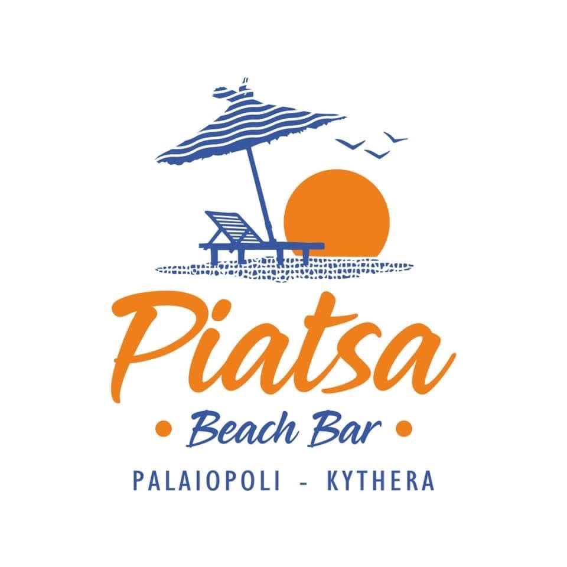

About Me
Hello! I'm Giannis Kopsaftis and am a businessman - crypto investor and self-taught programmer.
I am running my businesses on a small island in Greece called Kythera which is near Crete! I started using a computer from the age of 3. Since then the were not even a single day that I didn't use a computer. I am very excited and curious about them and I want to be a part of this technology. The need of learning Programming came natural to me and I started my journey on Code-Academy platform. By the time I am writting this I am still very early on the 'game'. I am looking to learn many languages and work for a big tech company or even build my own tech company.
In my free time I like to read about the universe,scinetific developments and programming. I also enjoy going for spearfishing and play some video games.
Projects
Belvedere Restaurant

I bought the restaurant in 2023 from the previous owner. I managed to make some major changes that turned the restaurant into a profitable business.
Chalkoo Beach

Running the business through a strong partnerships base since 2020.
Piatsa Beach Bar

Family business runned by me since 2019.